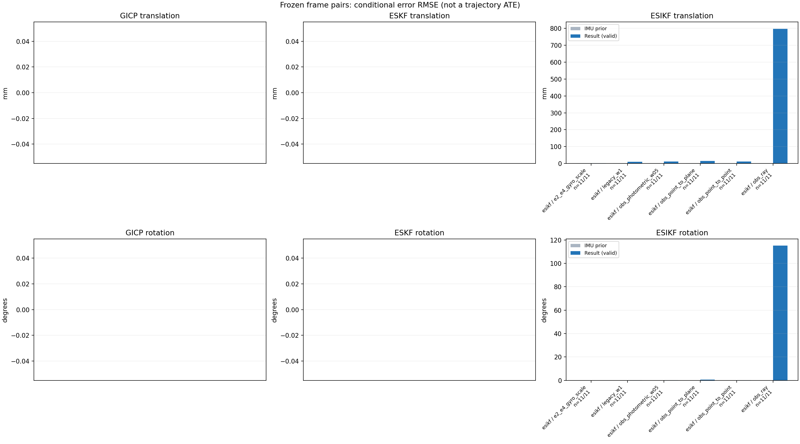

20261015_112659_forward · depth=disparity_cache · cache=568d9ece5ee78eee05bc
模型视差：/home/ubuntu22/slam/SIO_SLAM/models/tensorrt/disp_896x448_fp16.plan；engine SHA256=604cf6ac1f705c877260711730dd5d2d58c2a21f3020c03c668401ef7fb1e768。输入为生产裁剪与光照处理后的 RGB 0..255；此实验使用原始浮点像素视差，不应用完整前端的邻域视差后处理。
原始 ONNX SHA256：e9f49736a65d68d06681add463866b6defdf78fdd7f4f50f6cc941b682fdc0bc。
代价体图改写验证：ONNX Runtime 固定随机特征输入，最大绝对误差 0；该项检查图改写，完整模型精度仍需由录制数据评估。
配准代码版本：744ac2d993ae629b0cc44a3b1d995e04ab4fad48；观测生成版本：744ac2d993ae629b0cc44a3b1d995e04ab4fad48。
固定图像对与纯 IMU 先验；ESKF 回放固定 GICP 观测，ESIKF 直接读取点云。真值只用于此报告。
同时查看 converged 与 solver_status：上游默认 Stereo 在 max_iter / stopped_at_minimum 时也可能置 converged=true。valid 表示输入检查通过，不表示精度提升。欧氏 GICP 未提供独立的点距 RMSE，该列显示 NaN。
误差按每对图像的锚点计算，单位 m / degrees。此处 RMSE 不是全序列 ATE；末帧受同一锚点条件约束。NIS 与条件马氏距离是诊断量，少量相关图像对不能用于宣称协方差已校准。
全部指标 CSV · R / P 矩阵 CSV · Stereo 求解逐轮 CSV · ESIKF 逐轮轨迹 CSV · 末轮 H / R / K_pose 矩阵 CSV · 配置快照 · 矢量图
unflagged 排除纯惯性先验平移误差超过 50 mm 的图像对；whitened 为误差按协方差白化后的每自由度均值，协方差与实际误差相符时约为 1。
| stage | method | variant | valid | total | result_translation_rmse_m | result_rotation_rmse_deg | result_translation_median_m | result_rotation_median_deg | result_translation_rmse_unflagged_m | result_rotation_rmse_unflagged_deg | improved_translation | improved_rotation | posterior_whitened_by_P_rot_mean | posterior_whitened_by_P_trans_mean |
|---|---|---|---|---|---|---|---|---|---|---|---|---|---|---|
| esikf | esikf | e2_e4_gyro_scale | 11 | 11 | 0.0018268 | 0.020629 | 0.00060119 | 0.013303 | 0.0018268 | 0.020629 | 2 | 0 | 5.0057 | 10.16 |
| esikf | esikf | legacy_w1 | 11 | 11 | 0.010198 | 0.18573 | 0.0086833 | 0.12444 | 0.010198 | 0.18573 | 1 | 0 | 112 | 124.38 |
| esikf | esikf | obs_photometric_w05 | 11 | 11 | 0.011034 | 0.19368 | 0.010806 | 0.14499 | 0.011034 | 0.19368 | 1 | 0 | 65.499 | 73.682 |
| esikf | esikf | obs_point_to_plane | 11 | 11 | 0.015418 | 0.53862 | 0.012188 | 0.44234 | 0.015418 | 0.53862 | 0 | 0 | 109.53 | 64.236 |
| esikf | esikf | obs_point_to_point | 11 | 11 | 0.011031 | 0.19369 | 0.010864 | 0.14519 | 0.011031 | 0.19369 | 1 | 0 | 130.81 | 147.17 |
| esikf | esikf | obs_ray | 11 | 11 | 0.79818 | 115.14 | 0.099132 | 97.481 | 0.79818 | 115.14 | 0 | 0 | 135.43 | 59.533 |

| stage | case | method | variant | status | solver_status | inliers | converged | covariance_convention | covariance_from_hessian | fitness | registration_rmse_m | prior_trans_error_m | result_trans_error_m | prior_rot_error_deg | result_rot_error_deg | prior_flagged | R_rot_trace_rad2 | R_pos_trace_m2 | nis_regularized | posterior_whitened_by_P_rot | posterior_whitened_by_P_trans |
|---|---|---|---|---|---|---|---|---|---|---|---|---|---|---|---|---|---|---|---|---|---|
| esikf | static_a096 | esikf | obs_point_to_point | updated_not_converged | max_iterations | 17502 | 0 | 1 | 0 | 0 | 3.5054e-05 | 0.010864 | 0.010656 | 0.11524 | 0 | 1.0801e-07 | 8.8268e-07 | nan | 84.562 | 150.03 | |
| esikf | static_a096 | esikf | obs_photometric_w05 | updated_not_converged | max_iterations | 17501 | 0 | 1 | 0 | 0 | 3.5054e-05 | 0.010806 | 0.010656 | 0.11481 | 0 | 2.1594e-07 | 1.7644e-06 | nan | 41.694 | 74.249 | |
| esikf | static_a096 | esikf | obs_ray | updated_not_converged | correspondences_lost | 550 | 0 | 1 | 0 | 0 | 3.5054e-05 | 0.050882 | 0.010656 | 97.481 | 0 | 0.035957 | 0.00022957 | nan | 159.86 | 78.789 | |
| esikf | static_a096 | esikf | obs_point_to_plane | updated_not_converged | max_iterations | 17565 | 0 | 1 | 0 | 0 | 3.5054e-05 | 0.012188 | 0.010656 | 0.45705 | 0 | 8.1214e-07 | 3.6968e-06 | nan | 75.454 | 36.397 | |
| esikf | static_a096 | esikf | legacy_w1 | updated | converged | 17473 | 1 | 1 | 0 | 0 | 3.5054e-05 | 0.010555 | 0.010656 | 0.11678 | 0 | 1.08e-07 | 8.7856e-07 | nan | 79.147 | 142.88 | |
| esikf | static_a096 | esikf | e2_e4_gyro_scale | updated | converged | 17398 | 1 | 1 | 0 | 0 | 3.5054e-05 | 0.00018915 | 0.010656 | 0.013303 | 0 | 1.0861e-07 | 8.9556e-07 | nan | 3.007 | 1.0804 | |
| esikf | static_a100 | esikf | obs_point_to_point | updated_not_converged | max_iterations | 17240 | 0 | 1 | 0 | 0 | 3.3998e-05 | 0.0097913 | 0.0012052 | 0.14117 | 0 | 1.1357e-07 | 8.9979e-07 | nan | 56.752 | 117.85 | |
| esikf | static_a100 | esikf | obs_photometric_w05 | updated_not_converged | max_iterations | 17237 | 0 | 1 | 0 | 0 | 3.3998e-05 | 0.0098152 | 0.0012052 | 0.14126 | 0 | 2.2709e-07 | 1.7993e-06 | nan | 28.533 | 59.2 | |
| esikf | static_a100 | esikf | obs_ray | updated_not_converged | correspondences_lost | 22 | 0 | 1 | 0 | 0 | 3.3998e-05 | 2.5985 | 0.0012052 | 62.617 | 0 | 27.177 | 11.665 | nan | 0.37523 | 26.942 | |
| esikf | static_a100 | esikf | obs_point_to_plane | updated_not_converged | max_iterations | 17443 | 0 | 1 | 0 | 0 | 3.3998e-05 | 0.007135 | 0.0012052 | 0.44234 | 0 | 7.7848e-07 | 3.5915e-06 | nan | 76.405 | 12.57 | |
| esikf | static_a100 | esikf | legacy_w1 | updated | converged | 17194 | 1 | 1 | 0 | 0 | 3.3998e-05 | 0.0079941 | 0.0012052 | 0.12444 | 0 | 1.1454e-07 | 9.1896e-07 | nan | 38.374 | 77.782 | |
| esikf | static_a100 | esikf | e2_e4_gyro_scale | updated | converged | 17169 | 1 | 1 | 0 | 0 | 3.3998e-05 | 0.00016397 | 0.0012052 | 0.0074353 | 0 | 1.1437e-07 | 9.1882e-07 | nan | 2.0576 | 0.73415 | |
| esikf | static_a104 | esikf | obs_point_to_point | updated_not_converged | max_iterations | 17361 | 0 | 1 | 0 | 0 | 6.6207e-05 | 0.012753 | 0.003029 | 0.15163 | 0 | 1.0915e-07 | 8.5062e-07 | nan | 114.9 | 204.68 | |
| esikf | static_a104 | esikf | obs_photometric_w05 | updated_not_converged | max_iterations | 17361 | 0 | 1 | 0 | 0 | 6.6207e-05 | 0.012776 | 0.003029 | 0.1516 | 0 | 2.1813e-07 | 1.6989e-06 | nan | 57.79 | 102.84 | |
| esikf | static_a104 | esikf | obs_ray | updated_not_converged | correspondences_lost | 965 | 0 | 1 | 0 | 0 | 6.6207e-05 | 0.064962 | 0.003029 | 81.541 | 0 | 0.017046 | 0.00011732 | nan | 266.08 | 130.94 | |
| esikf | static_a104 | esikf | obs_point_to_plane | updated_not_converged | max_iterations | 17398 | 0 | 1 | 0 | 0 | 6.6207e-05 | 0.022818 | 0.003029 | 0.52461 | 0 | 7.9779e-07 | 3.2894e-06 | nan | 89.323 | 114.44 | |
| esikf | static_a104 | esikf | legacy_w1 | updated | converged | 17369 | 1 | 1 | 0 | 0 | 6.6207e-05 | 0.012452 | 0.003029 | 0.15609 | 0 | 1.0886e-07 | 8.4346e-07 | nan | 112.58 | 196.08 | |
| esikf | static_a104 | esikf | e2_e4_gyro_scale | updated | converged | 17199 | 1 | 1 | 0 | 0 | 6.6207e-05 | 0.00036765 | 0.003029 | 0.013949 | 0 | 1.116e-07 | 8.927e-07 | nan | 2.6745 | 3.2568 | |
| esikf | static_a108 | esikf | obs_point_to_point | updated_not_converged | max_iterations | 17798 | 0 | 1 | 0 | 0 | 7.6941e-05 | 0.011698 | 0.0031611 | 0.14617 | 0 | 1.0352e-07 | 8.3136e-07 | nan | 97.758 | 163.11 | |
| esikf | static_a108 | esikf | obs_photometric_w05 | updated_not_converged | max_iterations | 17800 | 0 | 1 | 0 | 0 | 7.6941e-05 | 0.011686 | 0.0031611 | 0.14557 | 0 | 2.0691e-07 | 1.6613e-06 | nan | 48.772 | 81.511 | |
| esikf | static_a108 | esikf | obs_ray | updated_not_converged | correspondences_lost | 762 | 0 | 1 | 0 | 0 | 7.6941e-05 | 0.053786 | 0.0031611 | 78.621 | 0 | 0.018684 | 0.00012655 | nan | 219.23 | 77.429 | |
| esikf | static_a108 | esikf | obs_point_to_plane | updated_not_converged | max_iterations | 17823 | 0 | 1 | 0 | 0 | 7.6941e-05 | 0.014449 | 0.0031611 | 0.29481 | 0 | 7.3329e-07 | 3.1403e-06 | nan | 49.41 | 60.924 | |
| esikf | static_a108 | esikf | legacy_w1 | updated | converged | 17793 | 1 | 1 | 0 | 0 | 7.6941e-05 | 0.011263 | 0.0031611 | 0.14211 | 0 | 1.0372e-07 | 8.3406e-07 | nan | 90.822 | 150.41 | |
| esikf | static_a108 | esikf | e2_e4_gyro_scale | updated | converged | 17604 | 1 | 1 | 0 | 0 | 7.6941e-05 | 0.00029541 | 0.0031611 | 0.0094633 | 0 | 1.0563e-07 | 8.6689e-07 | nan | 1.2555 | 1.6654 | |
| esikf | static_a112 | esikf | obs_point_to_point | updated_not_converged | max_iterations | 17664 | 0 | 1 | 0 | 0 | 0.00011251 | 0.015342 | 0.0067165 | 0.40088 | 0 | 1.0805e-07 | 8.1001e-07 | nan | 423.64 | 283.35 | |
| esikf | static_a112 | esikf | obs_photometric_w05 | updated_not_converged | max_iterations | 17671 | 0 | 1 | 0 | 0 | 0.00011251 | 0.015369 | 0.0067165 | 0.40114 | 0 | 2.1586e-07 | 1.6182e-06 | nan | 212.18 | 142.28 | |
| esikf | static_a112 | esikf | obs_ray | updated_not_converged | correspondences_lost | 761 | 0 | 1 | 0 | 0 | 0.00011251 | 0.070628 | 0.0067165 | 86.108 | 0 | 0.020483 | 0.00016889 | nan | 312.33 | 138.4 | |
| esikf | static_a112 | esikf | obs_point_to_plane | updated_not_converged | max_iterations | 17578 | 0 | 1 | 0 | 0 | 0.00011251 | 0.0082071 | 0.0067165 | 0.25867 | 0 | 7.3574e-07 | 3.1761e-06 | nan | 26.462 | 18.517 | |
| esikf | static_a112 | esikf | legacy_w1 | updated | converged | 17664 | 1 | 1 | 0 | 0 | 0.00011251 | 0.015342 | 0.0067165 | 0.40088 | 0 | 1.0805e-07 | 8.1001e-07 | nan | 423.65 | 283.37 | |
| esikf | static_a112 | esikf | e2_e4_gyro_scale | updated | converged | 17295 | 1 | 1 | 0 | 0 | 0.00011251 | 0.00060119 | 0.0067165 | 0.014273 | 0 | 1.1438e-07 | 8.7783e-07 | nan | 3.6906 | 5.4954 | |
| esikf | static_a116 | esikf | obs_point_to_point | updated_not_converged | max_iterations | 17240 | 0 | 1 | 0 | 0 | 0.00016571 | 0.015629 | 0.0008834 | 0.30478 | 0 | 1.0748e-07 | 8.5435e-07 | nan | 212.12 | 258.05 | |
| esikf | static_a116 | esikf | obs_photometric_w05 | updated_not_converged | max_iterations | 17240 | 0 | 1 | 0 | 0 | 0.00016571 | 0.015638 | 0.0008834 | 0.30504 | 0 | 2.1488e-07 | 1.7081e-06 | nan | 106.16 | 129.18 | |
| esikf | static_a116 | esikf | obs_ray | updated_not_converged | correspondences_lost | 60 | 0 | 1 | 0 | 0 | 0.00016571 | 0.19451 | 0.0008834 | 149.95 | 0 | 1.5395 | 0.10576 | nan | 15.756 | 5.8038 | |
| esikf | static_a116 | esikf | obs_point_to_plane | updated_not_converged | max_iterations | 17271 | 0 | 1 | 0 | 0 | 0.00016571 | 0.02693 | 0.0008834 | 0.76984 | 0 | 7.3338e-07 | 3.3036e-06 | nan | 251.79 | 189.9 | |
| esikf | static_a116 | esikf | legacy_w1 | updated | converged | 17239 | 1 | 1 | 0 | 0 | 0.00016571 | 0.015622 | 0.0008834 | 0.3043 | 0 | 1.075e-07 | 8.5492e-07 | nan | 211.57 | 257.74 | |
| esikf | static_a116 | esikf | e2_e4_gyro_scale | updated | converged | 17005 | 1 | 1 | 0 | 0 | 0.00016571 | 0.00042839 | 0.0008834 | 0.0080817 | 0 | 1.1175e-07 | 9.3548e-07 | nan | 1.2993 | 2.5113 | |
| esikf | static_a120 | esikf | obs_point_to_point | updated_not_converged | max_iterations | 17399 | 0 | 1 | 0 | 0 | 0.00019527 | 0.010938 | 0.0059755 | 0.14519 | 0 | 1.0528e-07 | 8.3773e-07 | nan | 110.32 | 149.6 | |
| esikf | static_a120 | esikf | obs_photometric_w05 | updated_not_converged | max_iterations | 17400 | 0 | 1 | 0 | 0 | 0.00019527 | 0.010934 | 0.0059755 | 0.14499 | 0 | 2.1041e-07 | 1.6728e-06 | nan | 54.967 | 74.948 | |
| esikf | static_a120 | esikf | obs_ray | updated_not_converged | correspondences_lost | 26 | 0 | 1 | 0 | 0 | 0.00019527 | 0.23521 | 0.0059755 | 159.85 | 0 | 2.6279 | 0.23355 | nan | 5.7666 | 3.2517 | |
| esikf | static_a120 | esikf | obs_point_to_plane | updated_not_converged | max_iterations | 17571 | 0 | 1 | 0 | 0 | 0.00019527 | 0.010791 | 0.0059755 | 0.42869 | 0 | 7.2838e-07 | 3.1744e-06 | nan | 119.21 | 27.16 | |
| esikf | static_a120 | esikf | legacy_w1 | updated | converged | 17312 | 1 | 1 | 0 | 0 | 0.00019527 | 0.0086833 | 0.0059755 | 0.12127 | 0 | 1.062e-07 | 8.5472e-07 | nan | 74.272 | 91.789 | |
| esikf | static_a120 | esikf | e2_e4_gyro_scale | updated | converged | 17278 | 1 | 1 | 0 | 0 | 0.00019527 | 0.00068081 | 0.0059755 | 0.013284 | 0 | 1.0591e-07 | 8.4995e-07 | nan | 3.0563 | 4.8742 | |
| esikf | static_a124 | esikf | obs_point_to_point | updated_not_converged | max_iterations | 17180 | 0 | 1 | 0 | 0 | 0.00022215 | 0.010028 | 0.0020946 | 0.20031 | 0 | 1.0869e-07 | 8.2926e-07 | nan | 237.23 | 130.4 | |
| esikf | static_a124 | esikf | obs_photometric_w05 | updated_not_converged | max_iterations | 17186 | 0 | 1 | 0 | 0 | 0.00022215 | 0.010046 | 0.0020946 | 0.20003 | 0 | 2.1715e-07 | 1.6558e-06 | nan | 119.6 | 65.632 | |
| esikf | static_a124 | esikf | obs_ray | updated_not_converged | correspondences_lost | 850 | 0 | 1 | 0 | 0 | 0.00022215 | 0.068871 | 0.0020946 | 82.341 | 0 | 0.018254 | 0.00013575 | nan | 294.32 | 145.09 | |
| esikf | static_a124 | esikf | obs_point_to_plane | updated_not_converged | max_iterations | 17586 | 0 | 1 | 0 | 0 | 0.00022215 | 0.019928 | 0.0020946 | 0.95913 | 0 | 7.1207e-07 | 3.1305e-06 | nan | 294.47 | 143.54 | |
| esikf | static_a124 | esikf | legacy_w1 | updated | converged | 17118 | 1 | 1 | 0 | 0 | 0.00022215 | 0.0082262 | 0.0020946 | 0.16135 | 0 | 1.0994e-07 | 8.3426e-07 | nan | 144.67 | 86.127 | |
| esikf | static_a124 | esikf | e2_e4_gyro_scale | updated | converged | 16992 | 1 | 1 | 0 | 0 | 0.00022215 | 0.00078949 | 0.0020946 | 0.0059134 | 0 | 1.1121e-07 | 8.5833e-07 | nan | 1.138 | 7.9954 | |
| esikf | static_g128 | esikf | obs_point_to_point | updated_not_converged | max_iterations | 17171 | 0 | 1 | 0 | 0 | 0.0015957 | 0.0031091 | 0.017755 | 0.077935 | 0 | 1.1288e-07 | 9.1389e-07 | nan | 10.021 | 11.548 | |
| esikf | static_g128 | esikf | obs_photometric_w05 | updated_not_converged | max_iterations | 17176 | 0 | 1 | 0 | 0 | 0.0015957 | 0.0031086 | 0.017755 | 0.078278 | 0 | 2.2567e-07 | 1.827e-06 | nan | 5.0576 | 5.773 | |
| esikf | static_g128 | esikf | obs_ray | updated_not_converged | correspondences_lost | 257 | 0 | 1 | 0 | 0 | 0.0015957 | 0.35055 | 0.017755 | 122.81 | 0 | 0.22985 | 0.01211 | nan | 80.233 | 20.306 | |
| esikf | static_g128 | esikf | obs_point_to_plane | updated_not_converged | max_iterations | 17234 | 0 | 1 | 0 | 0 | 0.0015957 | 0.017821 | 0.017755 | 0.69799 | 0 | 7.6842e-07 | 3.3935e-06 | nan | 149.61 | 78.353 | |
| esikf | static_g128 | esikf | legacy_w1 | updated | converged | 17102 | 1 | 1 | 0 | 0 | 0.0015957 | 0.0017718 | 0.017755 | 0.059989 | 0 | 1.1332e-07 | 9.2474e-07 | nan | 5.9592 | 3.574 | |
| esikf | static_g128 | esikf | e2_e4_gyro_scale | updated | converged | 17154 | 1 | 1 | 0 | 0 | 0.0015957 | 0.0012118 | 0.017755 | 0.034932 | 0 | 1.1294e-07 | 9.1746e-07 | nan | 3.1966 | 2.1302 | |
| esikf | static_g136 | esikf | obs_point_to_point | updated | converged | 17175 | 1 | 1 | 0 | 0 | 0.0017487 | 0.0011273 | 0.0092756 | 0.036224 | 0 | 1.1099e-07 | 8.8445e-07 | nan | 3.4037 | 1.2801 | |
| esikf | static_g136 | esikf | obs_photometric_w05 | updated | converged | 17175 | 1 | 1 | 0 | 0 | 0.0017487 | 0.0011279 | 0.0092756 | 0.036216 | 0 | 2.2189e-07 | 1.7683e-06 | nan | 1.7024 | 0.64087 | |
| esikf | static_g136 | esikf | obs_ray | updated_not_converged | correspondences_lost | 115 | 0 | 1 | 0 | 0 | 0.0017487 | 0.099132 | 0.0092756 | 140.91 | 0 | 0.16799 | 0.0016793 | nan | 83.908 | 9.2147 | |
| esikf | static_g136 | esikf | obs_point_to_plane | updated_not_converged | max_iterations | 17367 | 0 | 1 | 0 | 0 | 0.0017487 | 0.0042652 | 0.0092756 | 0.26713 | 0 | 7.4812e-07 | 3.3293e-06 | nan | 41.288 | 4.613 | |
| esikf | static_g136 | esikf | legacy_w1 | updated | converged | 17176 | 1 | 1 | 0 | 0 | 0.0017487 | 0.0012428 | 0.0092756 | 0.037212 | 0 | 1.1102e-07 | 8.8499e-07 | nan | 3.5246 | 1.5936 | |
| esikf | static_g136 | esikf | e2_e4_gyro_scale | updated | converged | 17175 | 1 | 1 | 0 | 0 | 0.0017487 | 0.0011469 | 0.0092756 | 0.033648 | 0 | 1.11e-07 | 8.8456e-07 | nan | 3.6909 | 1.5896 | |
| esikf | static_g144 | esikf | obs_point_to_point | updated_not_converged | max_iterations | 17422 | 0 | 1 | 0 | 0 | 0.0018492 | 0.010697 | 0.0069093 | 0.11369 | 0 | 1.0814e-07 | 8.3346e-07 | nan | 88.23 | 148.94 | |
| esikf | static_g144 | esikf | obs_photometric_w05 | updated_not_converged | max_iterations | 17421 | 0 | 1 | 0 | 0 | 0.0018492 | 0.010686 | 0.0069093 | 0.11355 | 0 | 2.1632e-07 | 1.6684e-06 | nan | 44.044 | 74.246 | |
| esikf | static_g144 | esikf | obs_ray | updated_not_converged | correspondences_lost | 56 | 0 | 1 | 0 | 0 | 0.0018492 | 0.10176 | 0.0069093 | 149.69 | 0 | 0.39497 | 0.0068198 | nan | 51.835 | 18.689 | |
| esikf | static_g144 | esikf | obs_point_to_plane | updated_not_converged | max_iterations | 17511 | 0 | 1 | 0 | 0 | 0.0018492 | 0.0066305 | 0.0069093 | 0.32049 | 0 | 7.6619e-07 | 3.3221e-06 | nan | 31.36 | 20.18 | |
| esikf | static_g144 | esikf | legacy_w1 | updated | converged | 17329 | 1 | 1 | 0 | 0 | 0.0018492 | 0.0077166 | 0.0069093 | 0.081988 | 0 | 1.0931e-07 | 8.4902e-07 | nan | 47.412 | 76.793 | |
| esikf | static_g144 | esikf | e2_e4_gyro_scale | updated_not_converged | max_iterations | 17335 | 0 | 1 | 0 | 0 | 0.0018492 | 0.0056578 | 0.0069093 | 0.036492 | 0 | 1.0917e-07 | 8.4746e-07 | nan | 29.996 | 80.432 |